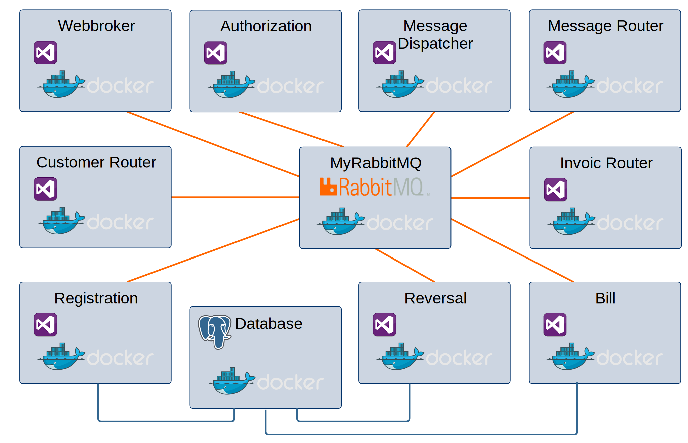
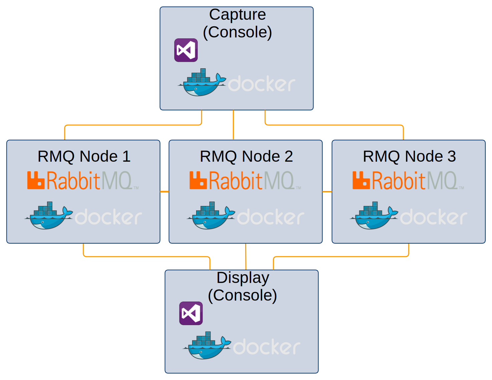
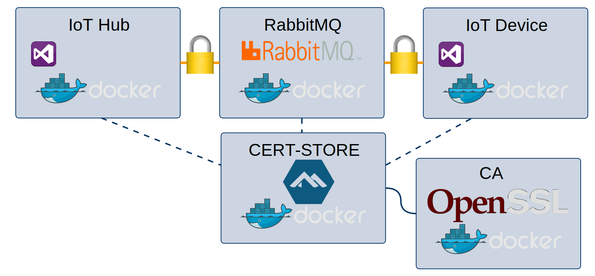
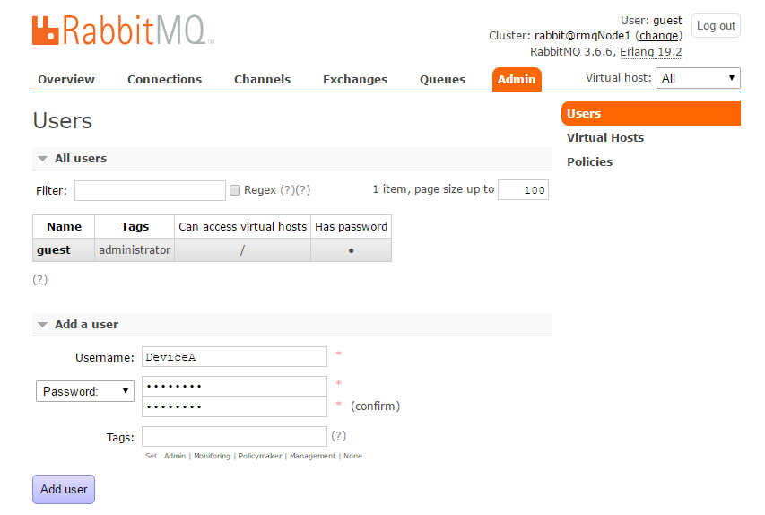
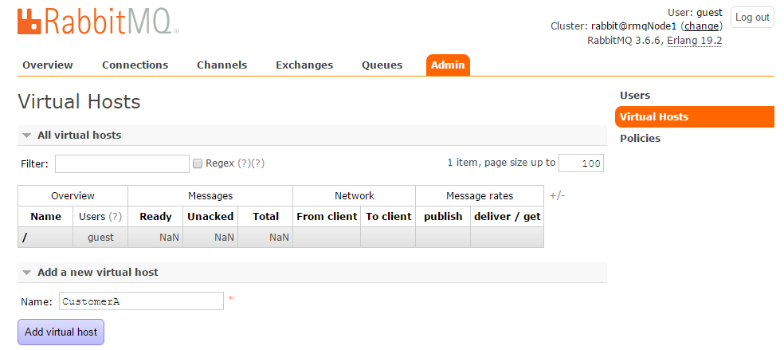
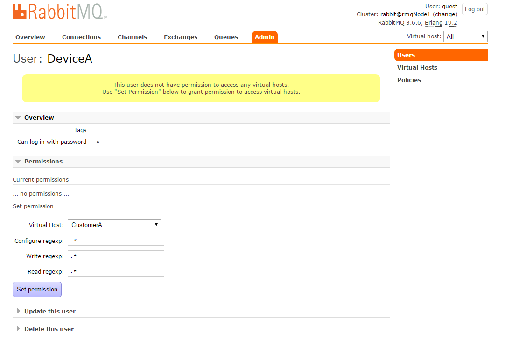

Deep Dive: Microservices mit RabbitMQ
Magdeburger Developer Days 2018
11.04.2018
Frank Pommerening
- Senior - Softwareentwickler
- Consultant
- Softwarearchitekt
frank@pommerening-online.de
Gründung: Mai 2012
Anzahl Mitarbeiter: 8 feste
Branchenfokus: Energiebranche
- Consulting (fachlich & IT)
- Requirements Engineering / Projektmanagement
- IT-Fachprozess-Analyse / Dokumentation
- Software-Entwicklung
- Microservices, SOA, REST, OOA und OOD
- Microsoft Technologien z.B. .NET (C#), WPF, WCF
- Datenbanken (MS SQL Server / Oracle / MongoDB)
Microservices ?!
RabbitMQ im Cluster
Voraussetzungen
Damit die verschiedenen Nodes verknüpft werden können, müssen sie das gleiche ERLANG COOKIE besitzen.Beispiel mit Docker
Hinweis: Sicherheit und eventuelle Firewallanpassung werden außer Acht gelassen.
$ docker network create rmqcluster
$ docker run -d --hostname rmqNode1 --name rmqNode1 --network=rmqcluster -p 5672:5672
-p 15672:15672 -e RABBITMQ_ERLANG_COOKIE='strenggeheim' rabbitmq:3-management
$ docker run -d --hostname rmqNode2 --name rmqNode2 --network=rmqcluster -p 5673:5672
-p 15673:15672 -e RABBITMQ_ERLANG_COOKIE='strenggeheim' rabbitmq:3-management
$ docker run -d --hostname rmqNode3 --name rmqNode3 --network=rmqcluster -p 5674:5672
-p 15674:15672 -e RABBITMQ_ERLANG_COOKIE='strenggeheim' rabbitmq:3-management
$ docker run -it --rm --network=rmqcluster -e RABBITMQ_ERLANG_COOKIE='strenggeheim'
rabbitmq:3 /bin/bash
rabbitmqctl -n rabbit@rmqNode2 stop_app
rabbitmqctl -n rabbit@rmqNode2 join_cluster rabbit@rmqNode1
rabbitmqctl -n rabbit@rmqNode2 start_app
rabbitmqctl -n rabbit@rmqNode3 stop_app
rabbitmqctl -n rabbit@rmqNode3 join_cluster --ram rabbit@rmqNode1
rabbitmqctl -n rabbit@rmqNode3 start_appAktivierung der Hochverfügbarkeit
Info
rabbitmqctl -n rabbit@rmqNode1 set_policy ha-all "" '{"ha-mode":"all"}'
EasyNetQ im Cluster
Cluster mit TCP-Loadbalancer
Loadbalancer entscheidet über Verteilung und ist für den Client transparent.var myBus = RabbitHutch.CreateBus("host=IP-LoadBalancer");Cluster mit re-try loop
EasyNetQ versucht nach einem Verbindungsproblem den nächsten Host zu finden. Ist kein Host verfügbar, werden alle 5 Sekunden alle Hosts geprüft.var myBus = RabbitHutch.CreateBus("host=host1,host2,host3");Cluster-Capture
TLS RabbitMQ mit SSL / TLS
IoT App
$ docker create volume rabbit-certstore$ docker run -it --rm rabbit-certstore:/rabbit-ssl
fpommerening/msrmq:ssl-ca /bin/bashcd /usr/local/bin/
./ca.sh MyCA
./server.sh rabbitServer strenggeheim
./client.sh rabbitClient strenggeheim$ docker run -d --name rabbitssl rabbit-certstore:/rabbit-ssl
-p 15671:15671 -p 5671:5671
-e RABBITMQ_SSL_CACERTFILE=/rabbitssl/ca/cacert.pem
-e RABBITMQ_SSL_CERTFILE=/rabbitssl/server/cert.pem
-e RABBITMQ_SSL_KEYFILE=/rabbitssl/server/key.pem
rabbitmq:3-management$ docker cp certstore:/rabbitssl/client/keycert.p12 .EasyNetQ mit SSL
var connection = new ConnectionConfiguration();
connection.Port = 5671;
connection.UserName = "guest";
connection.Password = "guest";
connection.Product = "SSLTest;var host1 = new HostConfiguration();
host1.Host = "localhost";
host1.Port = 5671;
host1.Ssl.Enabled = true;
host1.Ssl.ServerName = "rabbitServer";
host1.Ssl.CertPath = @"c:\Temp\keycert.p12";
host1.Ssl.CertPassphrase = "strenggeheim";
host1.Ssl.AcceptablePolicyErrors =
SslPolicyErrors.RemoteCertificateNameMismatch |
SslPolicyErrors.RemoteCertificateChainErrors;
connection.Hosts = new List< HostConfiguration> { host1 };
connection.Validate();
myBus = RabbitHutch.CreateBus(connection, services => { });V-HOSTS und Benutzer
Benutzer per Management-UI anlegen
 Admin -> User -> Add a UserTags
Die Tags schalten Funktionen wie den Zugriff auf die Management-UI frei. Die Pflege erfolgt per Links unterhalb der Textbox - nicht manuell!V-Host per Management-UI anlegen
Admin -> Virtual Hosts -> Add a new virtual host V-Host - Benutzer - Zuordnung
- Benutzer auswählen
- V-Host auswählen
- Berechtigungen ggf. einschränken
- Bestätigung mit 'Set permission'
V-Host
var myBus = RabbitHutch.CreateBus("host=localhost;virtualHost=myHost");Benutzer / Passwort
var myBus = RabbitHutch.CreateBus("host=localhost;username=myUser;password=myPasswort");Zeitgesteuertes Queuing
EasyNetQ IScheduler
Die Implementierungen des Interface IScheduler steuern die zeitversetzte Nachrichtenübertragung.Die Auswahl der Implementierung erfolgt per Registrierung.
var myBus = RabbitHutch.CreateBus("host=localhost",
register => register.Register<IScheduler,MongoScheduler.MongoScheduler>());GitHub
Starten Docker-Image mit Plugin
$ docker run -d --hostname rmqDelayEx --name rmqDelayEx
-p 5672:5672 -p 15672:15672
fpommerening/msrmq:rabbitmq-delaymxmgm
Die IScheduler-Implementierung DelayedExchangeScheduler wird von EasyNetQ mitgeliefert. Delayed Message
Plugin unterstützt keinen Abbruch (Cancelling) von Nachrichten -> NotImplementedException!